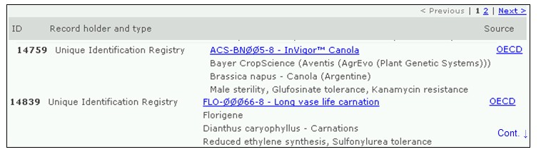

El Registro de Identificadores Únicos brinda información resumida de todos los organismos vivos modificados que están ingresados en el CIISB, incluidos el evento de transformación, la modificación genética y el código de identificación de cada uno, si está disponible. Los registros proporcionan vínculos a todas las decisiones y evaluaciones de riesgo que hacen referencia a estos organismos.
El Portal Central del CIISB utiliza sistemas de identificación única para organismos vivos modificados con el fin de facilitar la búsqueda y recuperación de información. Actualmente, el único sistema de identificación única que se utiliza a nivel internacional es el de Identificador Exclusivo para Plantas Transgénicas de la OCDE.
El Identificador Único de la OCDE es un código alfanumérico asignado a cada planta viva modificada que ha sido aprobada para uso comercial, incluido su uso como alimento humano o animal. Este código es similar al código ISBN que se usa para identificar libros. El sistema de designación de la OCDE fue diseñado para que quienes desarrollan una nueva planta transgénica puedan generar un identificador y lo incluyan en el expediente que elevan a sus autoridades nacionales en el proceso de evaluación de seguridad. Una vez aprobado, las autoridades nacionales remiten el identificador único a la Secretaría de la OCDE para ser incluido en la base de datos de productos de la OCDE, desde donde se comparte automáticamente la información con el Centro de Intercambio de Información sobre Seguridad de la Biotecnología.
Los identificadores únicos son códigos de nueve dígitos, compuestos por tres elementos separados por guiones (-). Dichos elementos son:
- 2 ó 3 dígitos alfanuméricos que designan al solicitante;
- 5 ó 6 dígitos alfanuméricos que designan al evento de transformación;
- 1 dígito numérico de verificación (el fin de este elemento es reducir la posibilidad de errores, asegurando la integridad del código alfanumérico).

Hay dos posibilidades para la designación de productos creados con más de un evento de transformación (que suelen llamarse eventos de transformación “combinados”, o en inglés “stacked events”), en los casos en que los eventos de transformación ya fueron aprobados para comercialización. El solicitante puede optar por generar un identificador único nuevo para tales productos o bien puede optar por usar una combinación de identificadores únicos de productos cuya comercialización ya fue aprobada.
El registro de Identificadores Únicos contiene una única entrada para cada organismo o evento de transformación, e incluye información detallada sobre el organismo. El registro presenta esta información resumida en forma de tabla, donde cada entrada puede ser seleccionada para ver más detalles.
Los registros de OVM proporcionan la siguiente información:
-
Información de contacto de quien lo desarrolló o de la compañía o solicitante;
-
El nombre y la identidad del OVM (nombre comercial);
-
Identificación única (cuando está disponible)
-
Información sobre OVM relacionados
-
Información sobre organismo receptor o parental (incluyendo nombre taxonómico, nombre(s) común(es) y lugar de recolección o adquisición
-
Información sobre el OVM (incluyendo Evento de transformación, Técnicas de modificación usadas, Genes insertados, Organismo(s) donador(es), lugar de recolección o adquisición, Rasgos introducidos o modificados y Descripción de la modificación genética;
-
Información sobre el Estado comercial (Tal como (i) uso autorizado al menos en un país, (ii) Descontinuado por el desarrollador o (iii) nunca comercializado e incluyendo la fuente de información sobre el estado comercial); y
-
Cualquier otra información pertinente y referencias.
Arriba de cada registro de OVM aparecen tres pestañas con vínculos a:
- Información general sobre OVM;
- Decisiones sobre OVM; y
- Evaluaciones de riesgo